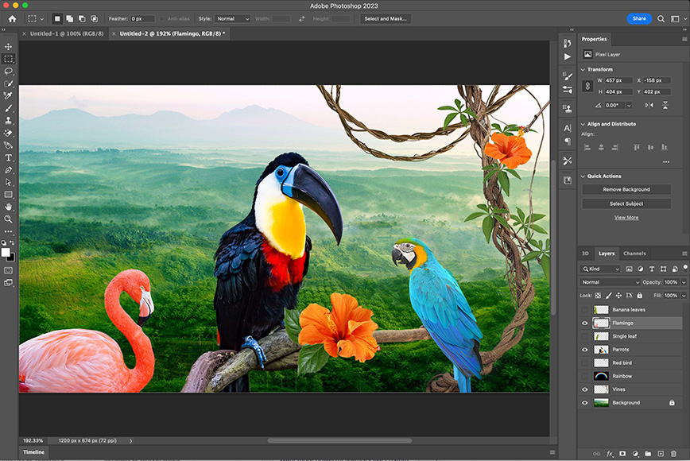

TEAM RED
CONTENIDO DE PAGINAS
En este programa, hemos logrado llevar a cabo la creación de figuras y escenarios 3D además de animaciones de las mismas, así como también la creación de logos de marcas incluyendo el logo de nuestracapacitación,En este caso se logró crear animaciones que se "mueven", es decir, si se presenta el escenario de una pista de boliche, podremos reproducir la escena permitiendo que veamos cómo se ejecuta un tiro de boliche en movimiento y en otro caso si hiciéramos algún personaje de caricatura o algo por el estilo podríamos darle movimiento y que pueda ejecutar ciertas poses o que simplemente pueda caminaromoverse.

Durante las clases de Photoshop hemos aprendido a realizar diferentes tipos de ediciones en imágenes, por ejemplo, eliminar elementos u objetos de la imagen o caso contrario agregar algún elemento (montaje) a la imagen, además de utilizar las herramientas de edición de detalles como es en el caso de delinear los objetos o elementos que agreguemos para limpiar los bordes de la imagen, también logramos cambiar el color o tono original a una imagen o elemento así mismo también logramos mejorar la estética de algunas imágenes con las herramientas del programa.
ACONTINUACION IMAGNES DE SU FUNCION

